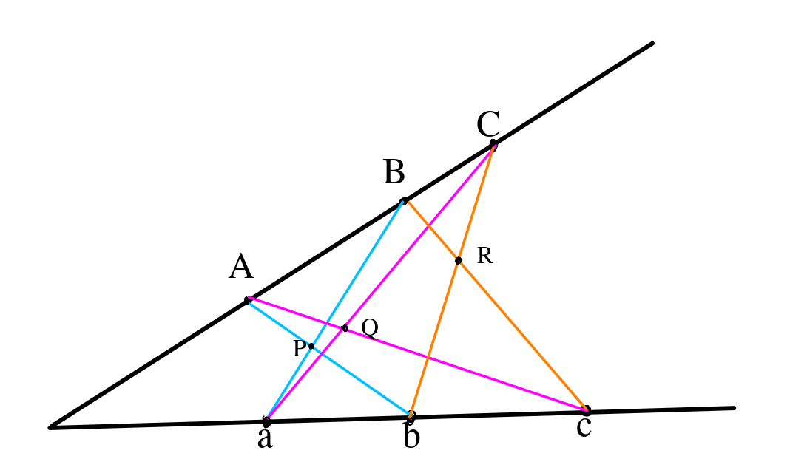
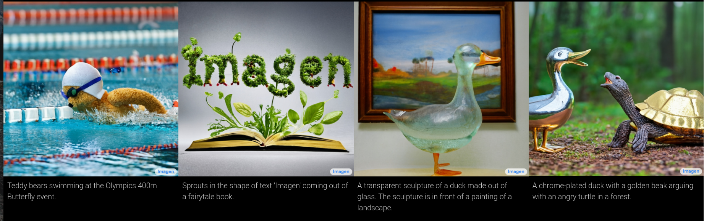

Automating Mathematics?
Siddhartha Gadgil
Department of Mathematics
Indian Institute of Science
Bangalore
- Can computers acquire all the major capabilities used by mathematicians and the mathematics community in the discovery and proof of mathematical results and concepts?
- When? How?
- Computers are already used in several ways.
- Capabilities in other cognitive domains that suggests they can do much more.
- Automated theorem proving is closely related to computer verification of proofs.
A concrete prediction
- Open bet by Christian Szegedy, Google Research.
- By the year 2029:
"A diverse set of 100 graduate text books are automatically formalized/verified in a popular proof assistant (eg Lean). 10% of problems from a preselected 100 open human conjectures is proved completely autonomously."
Ingredients for Automation
Universal deducer?
- A universal deducer is a program which, given a mathematical statement, either proves it is true or proves it is false.
- By results of Church, Gödel, Turing, such a program is impossible.
- We can seek to build ever more powerful systems that (help in) finding (and verifying) ever more powerful proofs.
- This will involve advances of many different kinds in combination.
Algorithms
- Numerical computation.
- Enumeration: a large number of problems of the same form.
- Symbolic and computational algebra.
- Compact enumeration.
- Exact real number arithmetic.
- Linear programming.
- Decidability of real semi-algebraic geometry.
- Many algorithms for specific mathematical questions based on mathematical theorems.
Deduction Engines
- SAT solvers can solve logical problems with finitely many Boolean variables.
- Many finite problems can be reduced to SAT.
- SMT solvers extend SAT solvers with various algorithms.
- Resolution Theorem Provers can in principle solve any problem in first-order logic, which encodes all of mathematics.
- In practice, all these have difficulty handling mathematics in the large.
Interactive Theorem Provers
- In Interactive Theorem Provers, proofs are obtained by human-machine collaboration.
- The computer both finds (parts of) proofs and verifies correctness.
- The ease of proving in such systems depends on how concise and composable proofs are and the strength of its automation.
- The power and ease of use also depends on the library – the results that are already in the system.
- The system thus accumulates knowledge and ways to use it effectively.
Artificial Intelligence
- Manage tasks for which we depend on experience, tacit knowledge.
- Work with limited or unstructured data.
- Learn and use a composable representation of words, images etc.
- Share learning between tasks.
- Handle long range dependencies.
- Work with a small number of task-specific examples.
- But: will give some nonsensical answers.
Computer Proofs
in
Mathematics
Cdang Derivative work: Muskid, CC BY-SA 3.0, via Wikimedia Commons
{kind=link}
Some computer-assisted proofs
- Four-colour problem: Any map can be coloured with at most $4$ colours.
- Kepler Conjecture: The most efficient way to pack spheres is the hexagonal close packing.
- Boolean Pythagorean triples problem: Is it possible to colour the positive integers either red or blue, so that if three integers $a$, $b$, $c$, satisfy $a^{2}+b^{2}=c^{2}$, they are not all the same colour?
- Smale conjecture for hyperbolic $3$-manifolds.
Robbins conjecture
- Robbins conjecture was a conjectural characterization of Boolean algebras in terms of associativity and commutativity of $\vee$ and the Robbins equation $\neg(\neg(a\vee b)\vee \neg(a \vee \neg b)) = a$.
- This was conjectured in the 1930s, and finally proved in 1996 using the automated theorem prover EQP.
- So far, this seems to be the only major success of fully autonomous deductive theorem provers.
SAT Solvers
The $N-$Queens problem
- The $N-$queens puzzle is the problem of placing $N$ chess queens on an $N\times N$ chessboard so that no two queens threaten each other.
- Thus, a solution requires that no two queens share the same row, column, or diagonal.
- We formulate this as a so called Boolean satisfiability (SAT) problem.
- A SAT solver solves SAT problems.
- A very large class of problems can be formulated as SAT problems.
$N$-Queens as SAT
- We associate to each square a boolean variable $Q_{i,j}$ which is true iff the square is occupied.
- We construct logical formulas for the constraints of the $N-$queens puzzle from the $Q_{i,j}$'s using operators $\neg$ (not), $\vee$(or) and $\wedge$(and).
- For example, the $i$th row has a queen is the formula $Q_{i,1}\vee Q_{i,2}\vee\dots\vee Q_{i,n}$
- Similarly, pairs of queens not threatening each other gives formulas such as $\neg Q_{1, 1}\vee \neg Q_{2, 2}$.
SAT Problems
- We are given finitely many boolean variables $P$, $Q$, ... and finitely many constraints on them.
- Constraints are logical statements built from the variables using logical operators such as $\neg$ (not), $\vee$(or), $\wedge$(and), $\Rightarrow$(implies) and $\Leftrightarrow$ (equivalent).
- The SAT (boolean satisfiability) problem asks whether we can assign truth values to these (i.e., declare each of $P$, $Q$ , ... to be $true$ or $false$) so that all the constraints are satisfied.
SAT and $P\overset{?}=NP$
- Given a solution to a SAT problem, it is easy to see that it satisfies all the constraints.
- However, finding a solution may be hard.
- Algorithmic problems that can be solved in polynomial time form the class $P$ (polynomial).
- Algorithmic problems whose solution, if it exists, can be checked in polynomial time form the class $NP$ (non-deterministic polynomial).
- A fundamental question is whether $P = NP$.
Cook-Levine theorem
- The Cook-Levine theorem from the early 1970s showed that if SAT can be solved in polynomial time then so can every problem in $NP$.
- There are a large class of problems that are known to be $NP$, making $P=NP$ a very important question.
- In practice, computer scientists have focussed efforts on making practically fast SAT solvers, which are used to solve (components of) many different problems by mapping them to SAT.
Resolution and the DPLL algorithm
- The formulation of $N$-Queens above was as a collection of clauses, i.e., in CNF.
- Any SAT problem can be formulated in CNF.
- Davis and Putnam showed that a deduction rule called Resolution is refutation complete for SAT, and indeed for First-Order Logic.
- The DPLL algorithm refines the algorithm of Davis-Putnam for SAT.
- Together with Robinson's unification, the Davis-Putnam work gives Resolution Theorem Provers, which can deduce any provable theorem.
SAT Solver-Prover in Lean 4
-
In Lean 4,
we can have a program with output one of
- a solution together with a proof that this is a solution, or
- a proof that there is no solution.
- Furthermore, the compiler verifies that the program terminates for any valid input, and has correct output of one of the above two forms.
- I implemented this in a program SATurn.
- This was the first time in my experience that such a complex program ran correctly straight away.
SMT Solvers
Z3 Demo: Sudoku

Euclidean Geometry via SMT?
- In the 1950s, Tarski proved that whether a collection of polynomial equations and inequations has solutions that are real numbers is decidable.
- Statements in Euclidean geometry can be translated to such problems.
- Tarski’s algorithm has been greatly improved, and algorithms of a more algebraic nature have also been developed, improved and implemented.
- However, I could not find any examples of using SMT solvers for such problems.
Pappus hexagon theorem
Theorem: $P$, $Q$ and $R$ are collinear.
- Points with coordinates $(x_1, y_1)$, $(x_2, y_2)$ and $(x_3, y_3)$, which we assume to be distinct, are collinear if and only if $(y_2 - y_1)(x_3 - x_1) = (y_3 - y_1)(x_2 - x_1).$
- As a warm up, we show that for $P= (x, y)$, $P$, $O=(0, 0)$ and $-P$ are collinear.
- To do this, we seek $x$ and $y$ so that $P$, $O$ and $-P$ are not collinear, and check for solutions.
- Indeed Z3 and CVC4 concluded instantly that there is no solution, i.e., the points are collinear.
- We scale and rotate to obtain nice coordinates
- We can take $a=(1, 0)$, $b= (1 + u, 0)$, $c = (1 + u + v, 0)$ with $u, v > 0$.
- Let $A = (x_A, y_A)$, then $B = (x_A(1+ U), y_A(1 + U))$ and $C = (x_A(1+ U + V), y_A(1 + U + V))$ with $U, V, y_A > 0$.
- We let $P=(P_x, P_y)$, $Q=(Q_x, Q_y)$ and $R= (R_x, R_y)$, giving $12$ variables in all.
- We get $6$ equations for collinearity, e.g. of $A$, $P$ and $b$.
- We also have various positivity inequations.
- We negate the equation for $P$, $Q$ and $R$ being collinear and ask if there is a solution.
- Unfortunately when I ran Z3 with this system it did not give a result.
- I blogged about this formulation and result.
- A couple of days later Anand Rao Tadipatri emailed me that he had got Z3 to prove Menelaus’s Theorem along similar lines.
- Strangely, I could not replicate his result.
- It turns out that Z3 can solver both theorems if only asked for an answer, but neither if asked for a proof.
Computer Verification for Mathematics
Interactive Theorem Provers
- Interactive Theorem Provers are software systems where proofs are obtained by human-machine collaboration.
- The computer both finds (parts of) proofs and verifies correctness.
- The ease of proving in such systems depends on how concise and composable proofs are and the strength of its elaborator and tactics.
- The former depends on foundations and the latter is essentially automated theorem proving.
Who guards the guards?
- A computer verified proof is only as trustworthy as the system that verified the proof.
- Following the de Bruijn principle, proofs are verified by a small trusted kernel, which can be thoroughly checked.
- For example, the lean theorem prover has three (small) proof checkers written in three languages.
- The Feit-Thompson theorem has been formalized in the system Coq by Georges Gonthier and others.
- The lean mathematical library has formalizations of a lot of undergraduate mathematics and many advanced results.
- These not only show that formalization is feasible, but can form data for both machine learning and advanced semantic searches and other tooling.
Formal methods
Mathematical proofs elsewhere
Formal methods
- We specify (describe) software, hardware etc. in precise mathematical terms.
- We give mathematical proofs of correct behavior, which are computer verified.
- This gives a much greater certainty of correctness.
- However, proofs are much harder than tests.
- Formal proofs use interactive theorem provers; with better provers we can prove more often.
Do we need completely correct always?
 |
Pentium FDIV Bug | Fixing an error is very costly |
 |
Therac 25 radiation machine | Safety critical |
 |
WhatsApp Pegasus attack | A bug is a vulnerability |
Some users of formal methods
 |
Intel Chips | Fixing an error is very costly |
 |
Paris driverless metro | Safety critical |
 |
Scala dotty compiler | A bug is a vulnerability |
Computers
and Games
Programming a Computer for Playing Chess
- Playing Chess can be based on
- judging the value of a fixed players position.
- a policy: sequences of moves to consider.
- We compute (and use) the value at the end of sequences moves we consider.
- We recursively decide the best moves by minimax — alternately maximizing and minimizing.
- We refine using various heuristics, such as quiescence search and $\alpha-\beta$ pruning.
- Openings give a policy, as do endgame tables.
Kasparov vs Deep Blue
- In 1997, a computer Deep Blue defeated the Chess world champion Gary Kasparov.
- Deep Blue was based on extending the above methods to elaborate (rule based) values and policies (chess theory), and improved heuristics.
- However, Deep Blues was very limited in certain capabilities.
- The value and policy functions of Kasparov were far better, but compensated for by Deep Blue being able to consider far more move sequences.
AlphaGo vs Lee Sedol
- In the chinese game Go, the number of legal moves is much larger, so trying everything means we cannot look many moves ahead.
- More importantly, it is very hard to describe a good value function (we use tacit knowledge).
- This makes it far harder for computers.
- Yet, in March 2016, a Go playing system AlphaGo defeated 18-time world champion Lee Sedol.
- In January 2017, AlphaGo defeated the world number one Ke Jie comprehensively.
AlphaGo and Learning
- The policy and value functions of AlphaGo are deep neural networks that were trained.
- The policy network was initially trained by learning to predict the next move from games of expert players (behaviour cloning).
- The value network was trained by AlphaGo playing against versions of itself.
- AlphaGo considered fewer sequences of moves than Deep Blue.
- AlphaGo came up with unexpected moves.
AlphaGo Zero and Alpha Zero
- AlphaGo was succeeded (and defeated) by AlphaGo Zero, which learnt purely by self play.
- Its successor, AlphaZero, could master a variety of similar games starting with just the rules.
- AlphaZero took just 4 hours to become the strongest chess player on the planet (beating a traditional chess program, Stockfish).
- AlphaZero “had a dynamic, open style”, and “prioritizes piece activity over material, preferring positions that looked risky and aggressive.”
Artificial Intelligence elsewhere
Word Embeddings
- To give words a structure and capture relations, words are embedded as points in space.
- To do this, (in Word2Vec) we set up the problem of predicting a word given its neighbours.
- We look for solutions of this problem that involve mapping words into space, and predicting from neighbours using the points.
- Analogies such as Paris is to France as Madrid is to Spain are captured by vector operations.
Generative Adversarial Network
- These consist of a pair of networks, contesting with each other.
- One network generates candidates (generative) and the other evaluates them (discriminative).
- For example the discriminative network tries to distinguish between real images and synthetic ones generated by the generative network.
Attention is all you need
- The meaning of a word depends on the context, i.e., other words surrounding it.
- In the transformer architecture, this is captured by learning to which other words to pay attention for determining the next representation.
- The encoding of words includes position vectors, defined by using harmonics.
- This has lead to revolutionary improvements, including forming the basis for GPT 3.
- Attention networks are used in AlphaFold 2.
Artificial Intelligence
for
Mathematical Proofs?
- First-order logic theorem provers (based on Resolution, SAT solvers) are very powerful at deducing consequences of a small set of premises.
- The main limitation is premise selection – choosing the already proved results from which to deduce.
- In DeepMath, deep learning is used effectively for this task.
LLMs/Foundation models
- These are based on the Transformer architecture.
- They are pre-trained on a huge dataset and may be fine-tuned on a more specific one.
- For a specific task, often a small prompt (typically some examples) is enough. 